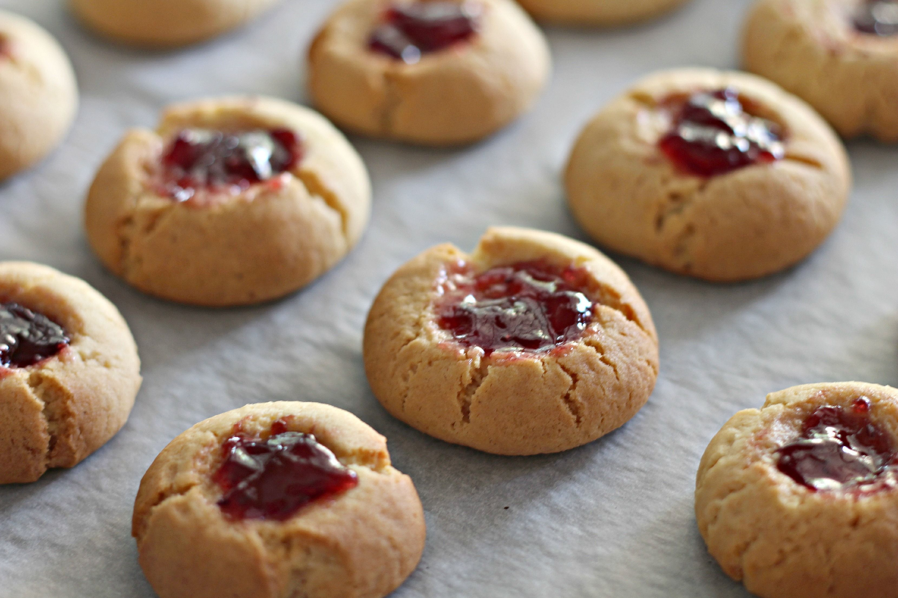

Jam Drops

Description
Jam drops for a blue day from Patacake. Super simple and not too sweet snacks. Easy to throw together for unexpected visitors.
Ingredients
- 1 cup plain flour
- 1 egg
- 1/4 cup rolled oats (optional)
- 120g melted butter or coconut oil
- 1 tbs vanilla extract
- 1/4 cup raw sugar (optional)
Instructions
- Mix all ingredients into a soft dough.
- Roll into ping pong size balls.
- Insert thumb into the middle of each ball to make well for the jam.
- Spoon in jam.
- Bake 15 mins at 180C.
- Eat and start to feel happier.
Back to home